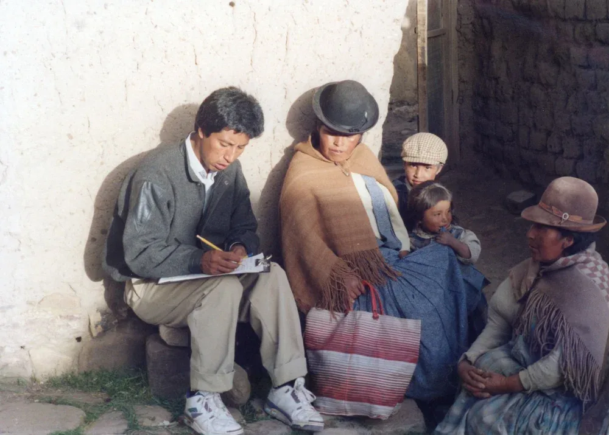
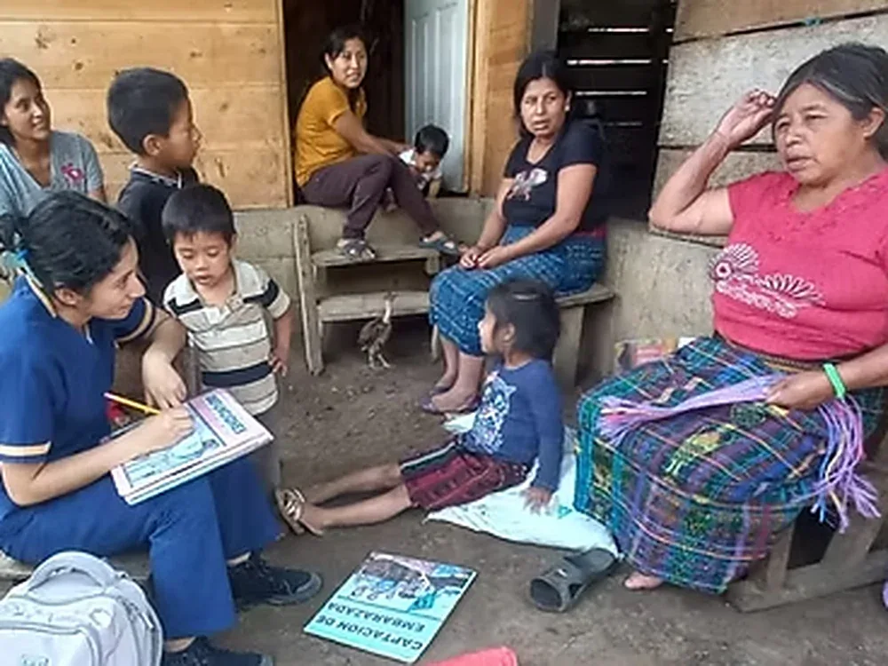
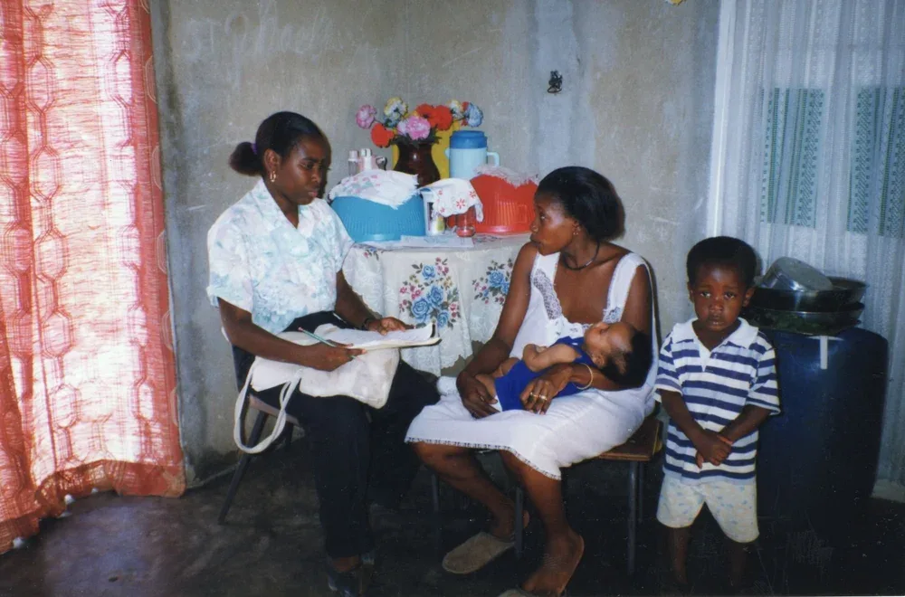
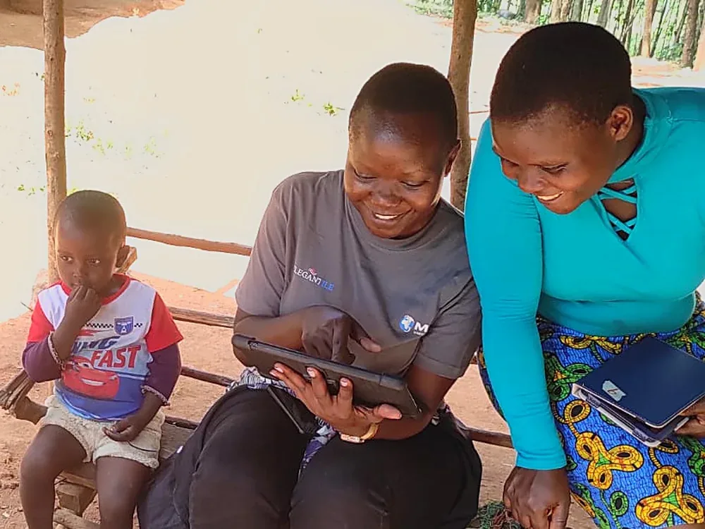
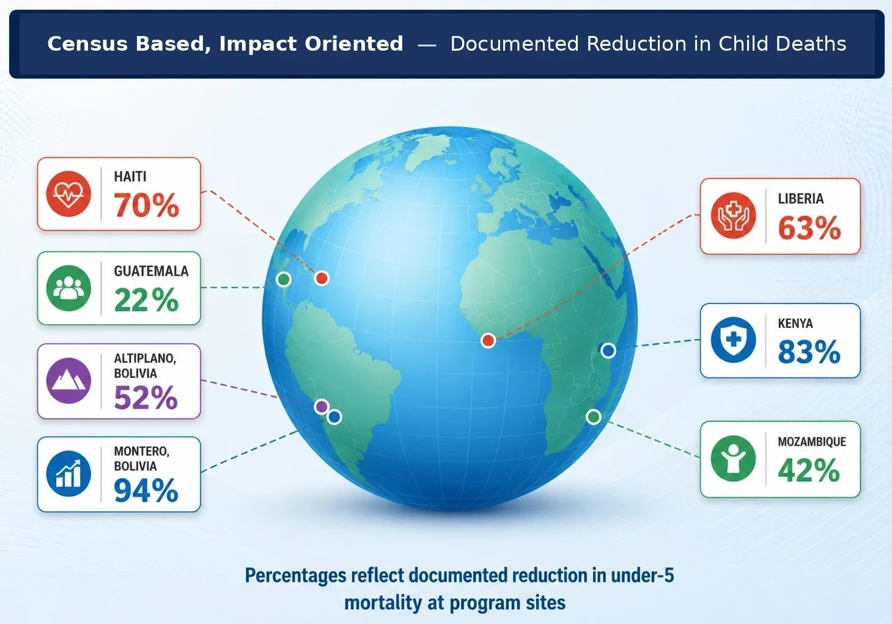

Achievements in Bolivia
Child mortality in peri-urban Montero was reduced to levels lower than in the United States, with further gains documented on the Altiplano.

Breakthroughs in Rural Guatemala
The CBIO model achieved results where previous agency efforts had failed:
- 22% reduction in under-5 mortality
- 59% reduction in maternal mortality
- Significant improvements in childhood nutrition across the rural highlands

Impact in Rural Liberia
Rapid scale-up of evidence-based interventions led to an estimated 63% reduction in under-5 mortality.

Impact in Rural Kenya
Achieved some of the highest reductions documented globally:
- 65% reduction in under-5 mortality
- 70% reduction in maternal mortality
Current CBIO Implementing Partners

For details on these figures, please see this document.